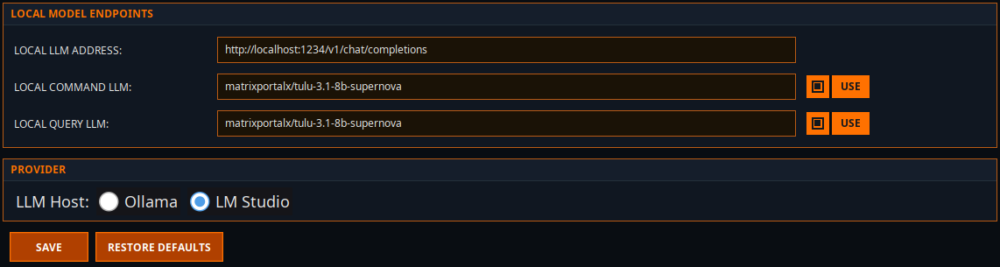

Вибір локального сервера інференції
Для запуску локального LLM з Elite Intel потрібен сервер інференції. Це програмне забезпечення, яке завантажує модель ШІ та надає до неї доступ через локальний API. Це локальний еквівалент хмарного сервісу ШІ, що працює повністю на твоєму власному залізі.
Elite Intel підтримує два сервери інференції: Ollama та LM Studio. Обидва сумісні та використовують однакові моделі. Вибір можна змінити в налаштуваннях у будь-який час.

Вимоги до GPU
Вимоги до заліза для запуску гри та LLM на одній машині:
- RTX 3090 24 ГБ VRAM
- AMD RX 7800 XT
Якщо у тебе недостатньо заліза, скористайся безкоштовним хмарним сервісом
Таблиця порівняння GPU від Kevin Rank доступна тут: Довідник з GPU
Посібники з встановлення
| Сервер інференції | |
|---|---|
| ✅ LM Studio - Linux | Швидкий, більша гнучкість моделей посібник показує налаштування як сервера |
| ✅ LM Studio - Windows | Швидкий, більша гнучкість моделей є графічний інтерфейс |
| Ollama - Linux | Рекомендовано, якщо є достатньо заліза |
| Ollama - Windows | Рекомендовано, якщо є достатньо заліза |
Ollama vs. LM Studio: коротке порівняння
| Ollama | LM Studio | |
|---|---|---|
| Швидкість | Повільніший | Швидший |
| Рекомендована модель | tulu-3.1-8b-supernova Q4_K_M | tulu-3.1-8b-supernova Q4_K_M |
| Найкраще підходить для | Проста установка, мінімальне обслуговування | Більший контроль над завантаженням моделей |
| Встановлення | Один скрипт і готово | Один скрипт і готово |
| Запускається як | Системний сервіс (автозапуск при старті) | Ручний запуск або опціональний автозапуск |
| Налаштування моделі | Modelfile вбудований у модель | Параметри при завантаженні |
| Автозапуск Windows | ✅ Працює з коробки | Потребує десктопного додатку або планувальника завдань |
| Автозапуск Linux | ✅ Сервіс systemd включено | Ручне налаштування systemd |
| Джерело моделей | Бібліотека Ollama | HuggingFace (GGUF) |
| Порт API | 11434 |
1234 |
| Графічний інтерфейс | Відсутній (тільки CLI) | Опціональний десктопний додаток |
Посібник з вибору
Використовуй Ollama, якщо:
- Тобі потрібна проста установка з мінімальним поточним налаштуванням
- Ти на Windows і не хочеш вручну налаштовувати автозапуск
- Ти тільки починаєш роботу з локальними LLM
Використовуй LM Studio, якщо:
- Тобі потрібен графічний інтерфейс для перегляду, завантаження та управління моделями
- Ти вже знайомий з HuggingFace і файлами моделей GGUF
- Хочеш експериментувати з різними моделями без написання Modelfiles
- Запускаєш виділену машину для інференції та потребуєш чистого headless-сервера
Будь-який варіант підходить, якщо:
- У тебе є NVIDIA RTX 3090 24 ГБ або аналог чи краще. VRAM критичний фактор, а не швидкість GPU. GPU лише з 12 ГБ VRAM є недостатнім незалежно від покоління.
- Ти запускаєш Elite Dangerous та LLM на одній машині
- Хочеш вказати Elite Intel на окремий ПК у своїй мережі
Рекомендація розробника
Розробник використовує LM Studio з matrixportalx/Tulu-3.1-8B-SuperNova-Q4_K_M-GGUF. Ця модель забезпечує швидку інференцію. Та сама модель на Ollama працює помітно повільніше. Застосунок оптимізований під цю модель. Інші моделі можуть працювати, але це не гарантується. Повідомляй про результати сумісності в Matrix.
Чому саме tulu3.1:8b Supernova?
Elite Intel це аналізатор команд і інструмент аналізу даних, а не розмовний чатбот. Це висуває специфічні вимоги до моделі. Генерувати природно звучачу розмову недостатньо. Модель повинна правильно визначати дії з голосового вводу та виконувати структурований аналіз даних. Вона повинна повертати результати у форматованому JSON, а не у вигляді есе або HTML. Не всі моделі такого розміру надійно виконують це завдання.
Tulu 3 (базовий рецепт навчання) є справді видатним
Tulu-3.1-8B-SuperNova-Q4_K_M-GGUF
Більшість навчальних моделей тренуються за допомогою RLHF, який використовує навчену модель винагороди для оцінки виходів. Ця модель винагороди сама є нейронною мережею і успадковує всі типові упередження та непослідовності. Tulu 3 замінив це на RLVR (навчання з підкріпленням з верифікованими винагородами). Замість навченої моделі винагороди навчання використовує детерміновану функцію оцінки: відповідь або правильна, або ні. Бінарно, без упереджень. Це особливо ефективно для завдань дотримання інструкцій, де сигнал винагороди є об'єктивним.
Конвеєр навчання це чотиристадійний підхід: куріація даних для основних навичок, кероване тонке налаштування, оптимізація прямих переваг і RLVR поверх для підвищення точності на верифікованих завданнях. Кожна стадія будується на попередній. Саме тому Tulu 3 на базі Llama 8B досягає результатів, що перевершують instruct-версії Llama 3.1, Qwen 2.5, Mistral і навіть закриті моделі, такі як GPT-4o-mini і Claude 3.5 Haiku.
Для EliteIntel стадія класифікації команд є завданням дотримання інструкцій з верифікованими правильними відповідями (JSON-дія X або Y). Це саме той тип завдань, який оптимізує RLVR. Модель навчена спеціально для детермінованого структурованого виводу.
Чому варіант «Supernova»
Варіант Supernova відрізняється від стандартного Tulu 3. Tulu-3.1-8B-SuperNova створюється шляхом лінійного злиття трьох моделей: Llama-3.1-MedIT-SUN-8B (медицина/міркування), Llama-3.1-Tulu-3-8B (дотримання інструкцій) і Llama-3.1-SuperNova-Lite (дистильована модель Arcee), кожна з однаковою вагою 1.0 за допомогою mergekit.
Батьківська модель SuperNova-Lite це дистильована модель з більшої бази Arcee, що забезпечує щільність знань вище, ніж у стандартної моделі 8B. Лінійне злиття безпосередньо усереднює тензори ваг, поєднуючи знання без додаткових обчислень навчання. Це дозволяє досягти особливо сильних результатів у завданнях дотримання інструкцій, що підтверджується оцінкою IFEval.
Продуктивність: Модель використовує архітектуру Llama 8B. При квантизації Q4_K_M на 3090 з 24 ГБ вона поміщається у VRAM разом із грою із запасом. Це дозволяє уникнути вивантаження на CPU і підтримує максимальну пропускну здатність інференції. Порівнянні моделі Qwen використовують інші конфігурації головок уваги (наприклад, коефіцієнт GQA у Qwen2.5), які можуть працювати повільніше у бекенді GGUF від llama.cpp.
Вона також працює на карті з 12 ГБ VRAM за умови відсутності інших навантажень, що споживають VRAM. Для цього потрібно, щоб гра запускалася на окремому GPU або машині.
Чи можу я використовувати іншу модель?
Альтернативні моделі можуть використовуватися, але навряд чи зрівняються за швидкістю та точністю з tulu3.1-supernova.
Типові проблеми з альтернативними моделями включають неправильний формат відповіді. Найчастіша помилка модель повертає есе замість структурованої дії або результату аналізу.
Спільнота 👉Matrix👈